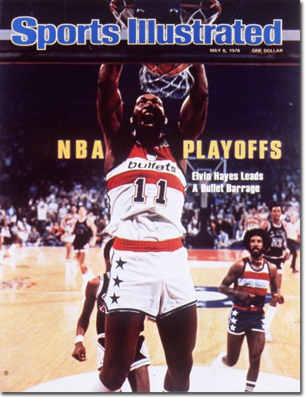
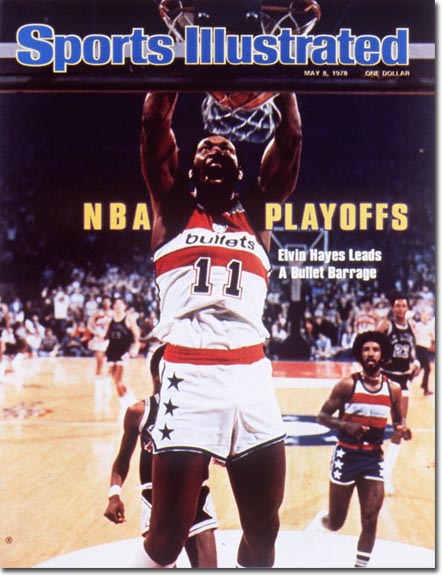

Late May, early June 1978 was a tough stretch for fans of the Seattle Supersonics. It was the NBA Finals series: Rising Seattle star Dennis "DJ" Johnson and his cohorts (scoring guru Gus Williams, big man Jack Sikma, among others) were up 3-2 out of a seven game series against the Washington Bullets, led by legends Elvin Hayes and Wes Unseld. The Sonics would drop Game 6 in a Finals record point difference that wouldn't be bested (or worsted) until the Bulls held the Jazz to 54 points in Game 3 of the '98 Finals. With a seconds-left breakaway dunk from Bob Dandridge, the Bullets went up 105 - 99 to seal the deal for the ring, stripping Seattle of what would be their first NBA title.
 
The next year both teams finished the season first seed, and the league geared up for a rematch. This time around the Bullets took the series 4-1. This was the first and only title for Seattle. DJ was named Finals MVP and to the All NBA Defensive Team. Gus Williams led the team in scoring with 28 points per game, and an honorable mention goes to "Downtown Freddie Brown" whose was the teams captain in a 6th man role. He was instant offense off the bench and a Supersonics legend. The '79 Finals Championship was the first and only title for Rainy City. In 2008 the team relocated to Oklahoma City. The squad from Seattle is dearly missed.

The next year both teams finished the season first seed, and the league geared up for a rematch. This time around the Bullets took the series 4-1. This was the first and only title for Seattle. DJ was named Finals MVP and to the All NBA Defensive Team. Gus Williams led the team in scoring with 28 points per game, and an honorable mention goes to "Downtown Freddie Brown" whose was the teams captain in a 6th man role. He was instant offense off the bench and a Supersonics legend. The '79 Finals Championship was the first and only title for Rainy City. In 2008 the team relocated to Oklahoma City. The squad from Seattle is dearly missed.